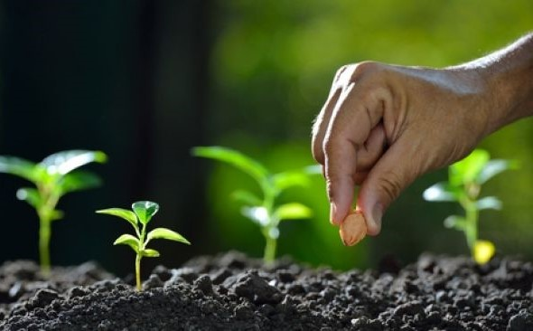

When you want to open a business, many people think and wonder what kind of business they will open? where to start? how much capital is needed? is it easy to market it? And whether the business can generate large profits? To answer it all, you should try to see opportunities in your village. You can survey while thinking about what potential exists in your village or what things don't yet exist in your village but are really needed by the village community.
After that you get an idea and find a business idea, try to calculate the approximate capital needed. Regarding the business making a profit or not, it depends on how you market it, run it and also need to know that the name of the business has its ups and downs as well. The following is a business that you can try to run in your village, namely selling plant seeds. Before you try to open a business selling plant seeds, there are important points that you must pay attention to first if you really want to have a business selling plant seeds.
there is an important point that you must pay attention to first if you really want to do a business selling plant seeds.
- Land for sowing crops
- Plant seeds that can be sold
- Selling price of plant seeds
|
